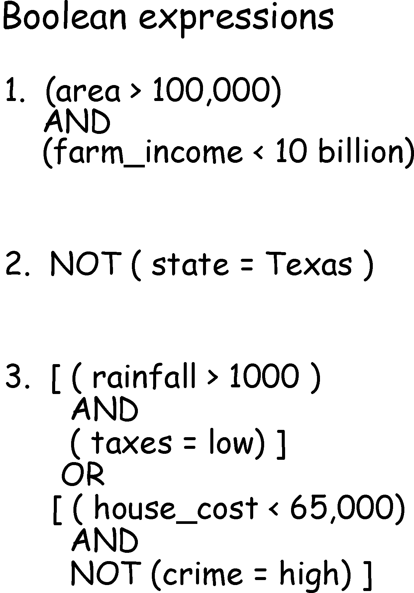

Week 9:
Basic Spatial Analysis
Intro to GIS
Evan Lue, PhD
Spatial Analysis
The application of spatial operations (or geoprocesses) to solve a problem
Based both on location and attributes, but it wouldn't be "spatial" without location
Examples: identifying high crime areas, or generating list of roads that need paving
Workflows/Models
Related to ArcGIS ModelBuilder
Bolstad 2012, Fig 9.1
Inputs and Outputs
Bolstad 2012, Fig 9.2
Rasterization
An example of a spatial operation, but not analysis
Bolstad 2012, Fig 9.3
Types of Operations
Local - output comes from input location
Neighborhood - output comes from input location and neighbors
Global - output comes from entire input layer
Bolstad 2012, Fig 9.4
Selection and Classification
Selection Operations
Bolstad 2012, Fig 9.5
Set Algebra
> Greater than
>= Greater than or equal to
< Less than
<= Less than or equal to
= Equal to
<> Not equal to
Bolstad 2012, Fig 9.6
Boolean Algebra
AND, OR, NOT
Bolstad 2012, Fig 9.7
Spatial Outcomes
AND is more limiting than OR
Bolstad 2012, Fig 9.8
Real World Example
Bolstad 2012, Fig 9.9
Spatial Selections
Adjacency
Bolstad 2012, Fig 9.10
Spatial Selections
Containment
Bolstad 2012, Fig 9.11
Classification
aka as symbology by quantities or categories
Bolstad 2012, Fig 9.12
Coding
Assigning codes
Bolstad 2012, Fig 9.13
Bolstad 2012, Fig 9.14
Creating Breaks
Examine spatial and histogram distributions
Bolstad 2012, Fig 9.15
Equal Interval
Interval size is the range divided by the number of classes
Bolstad 2012, Fig 9.16
Equal Area
Not a standard option in ArcMap
Bolstad 2012, Fig 9.17
Natural Breaks
After defining the number of classes, creates natural breaks in the histogram
Bolstad 2012, Fig 9.18
MAUP
Modifiable Areal Unit Problem (very important!)
Bolstad 2012, Fig 9.19
Dissolve
and
Proximity Functions and Buffering
Dissolve
Bolstad 2012, Fig 9.20
Bolstad 2012, Fig 9.21
Distance Function
Bolstad 2012, Fig 9.22
Bolstad 2012, Fig 9.23
Buffers
Bolstad 2012, Fig 9.24
Raster Buffers
Bolstad 2012, Fig 9.25
Vector Buffers
Bolstad 2012, Fig 9.26
Vector Buffer Types
Bolstad 2012, Fig 9.28
Line Buffer Creation

Bolstad 2012, Fig 9.29
Inside, Outside, and Enclosed
Bolstad 2012, Fig 9.30
Variable Distance Buffer
Bolstad 2012, Fig 9.31
Overlay
Basic Overlay
Bolstad 2012, Fig 9.32
Raster Overlay
We will get into "map algebra" in the next lecture
Bolstad 2012, Fig 9.33
Raster Compatibitlity
If two rasters don't "snap", at least one raster will be resampled
Bolstad 2012, Fig 9.34
Polygon Overlay
Union or Identity in ArcMap
Bolstad 2012, Fig 9.35
Point/Polygon Overlay
Spatial Join in ArcMap
Bolstad 2012, Fig 9.36
More Overlay Examples
Bolstad 2012, Fig 9.37
Clip, Intersect, and Union
Bolstad 2012, Fig 9.38
Topology is Important in Overlays!
Bolstad 2012, Fig 9.40
Spatial Analysis Example
Plan a Wind Farm
Bolstad 2012, Fig 9.42
Results
Bolstad 2012, Fig 9.43
Network Analysis
Examples of Networks
Roads, pipelines, power transmission, and rivers
Bolstad 2012, Fig 9.44
Network Elements
Bolstad 2012, Fig 9.45
Costs
How much time/distance/energy/money does each link cost?
Bolstad 2012, Fig 9.46
Least Cost Algorithms
Bolstad 2012, Fig 9.47
Least Cost Path Solutions
Bolstad 2012, Fig 9.48
Resource Allocation
Bolstad 2012, Fig 9.49
Geocoding
Address Interpolation
Bolstad 2012, Fig 9.50
Be Wary
Not all streets are "standardized"
Bolstad 2012, Fig 9.51